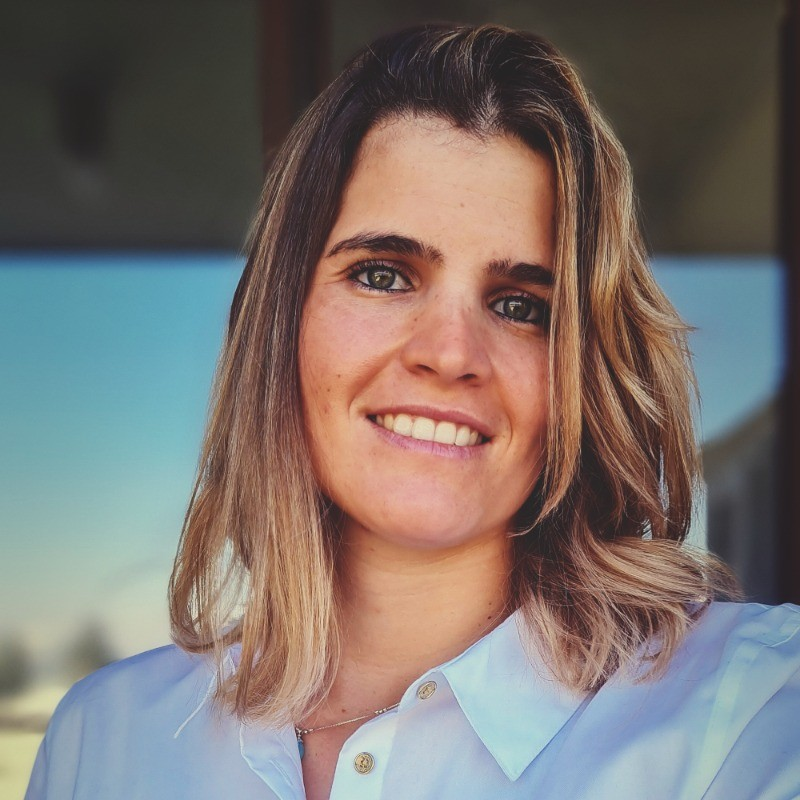

Maria Fernanda Rios Valencia
Sobre mí
Ingeniero con un gran interés en la tecnología, el análisis de datos, los procesos y el desarrollo de proyectos. Responsable, con habilidades en relaciones interpersonales, comprometido, con capacidad de aprendizaje y adaptación a nuevos desafíos
Datos Personales
- Nombre: Maria Fernanda Rios Valencia
- Lugar de Nacimiento: Antofagasta, Chile
- Fecha de Nacimiento: 10 de abril de 1992
Experiencia
- 2021-PRESENTE: ADMINISTRADOR DE RESTAURANTE FAMILIAR
- 2016-2021: ANALISTA DE CONTROL DE GESTIÓN Y PLANIFICACIÓN DE OPERACIONES, VTR (LIBERTY GLOBAL), SANTIAGO, CHILE
- F2015-2016 | ANALISTA DE REPORTES, ÁREA COMERCIAL, VTR (LIBERTY GLOBAL), SANTIAGO, CHILE
- 2015 | ANALISTA DE CONTROL DE GESTIÓN, RECURSOS HUMANOS, VTR (LIBERTY GLOBAL), SANTIAGO, CHILE
- 2014 | PRÁCTICA PROFESIONAL - ANALISTA DE CONTROL DE GESTIÓN, RECURSOS HUMANOS, VTR (LIBERTY GLOBAL), SANTIAGO, CHILE
Educacion
2010 – 2015 | UNIVERSIDAD DEL DESARROLLO, SANTIAGO, CHILE.
Ingenieria Civil Industrial
Portafolio
Visita mi portafolio
Puedes encontrarme en LinkedIn.